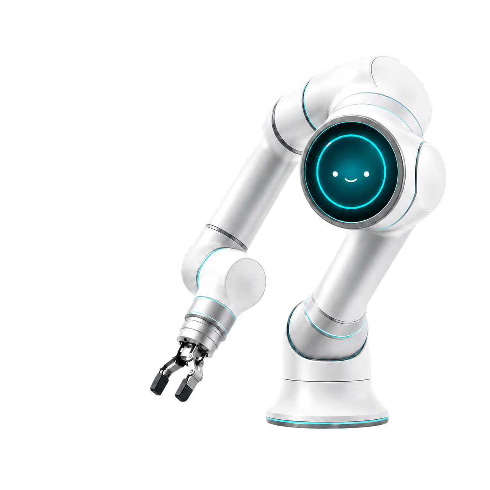

DOOSAN ROBOTICS BOOTCAMP · ROKEY · B-2 TEAM
사람의 말을 알아듣고 손을 쓰는 협동로봇

HOMIE
Helping Out! Making It Easy! — Doosan m0609 기반 음성 협동로봇
음성 인식
멀티모달 AI
ROS 2
행동 트리
분산 시스템


SECTION 02 · TECH STACK
네 카테고리, 한 페이지 — 핵심 기술 스택
Hardware
Doosan m0609
OnRobot RG2
 RealSense D435
RealSense D435
USB Microphone
AI / Vision
Whisper · GPT-4o
PyTorch
YOLO11s
 OpenCV · Open3D
OpenCV · Open3D
Middleware
ROS 2 Humble
CycloneDDS
Docker Compose
MySQL 8
Dev / Tools
Python · C++
 FastAPI
FastAPI
colcon · ament
 GitHub
GitHub
SECTION 04 · Q & A
감사합니다 — 질문 환영합니다
HOMIE
Helping Out! Making It Easy! — cobot2 음성 협동로봇 시스템